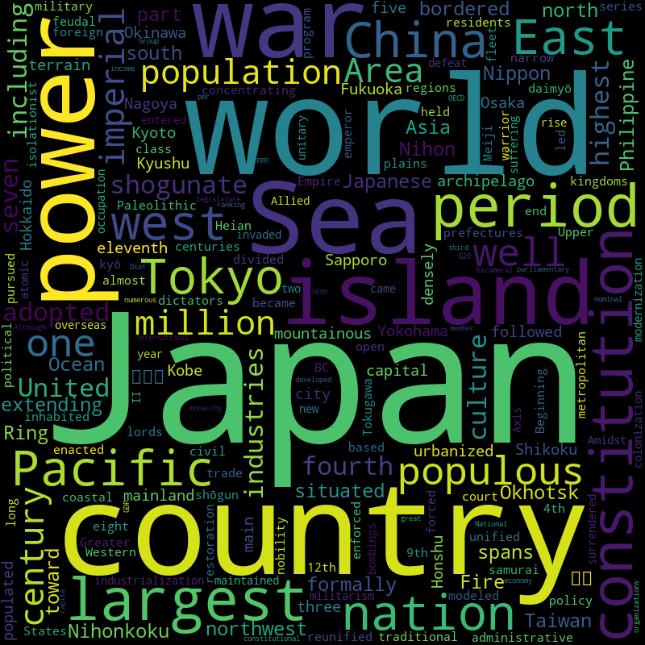

Do you know you can create some really good visualisations on enormous levels of text using Python? Powerful Libraries in Python enable us to make amazing visualisations with little effort
The current will mine small data description from Wikipedia and make a wordcloud on the available text data. We will use Wikipedia and Worcloud Plugins to create a really nice representation of the words obtained
日本語説明
Made on 1st April 2023

A word cloud is a collection, or cluster, of words depicted in different sizes. The bigger and bolder the word appears, the more often it’s mentioned within a given text and the more important it is.
To give context, let's say I want to know about the prefecture of Japan and I want to know what makes it so special and make it easy to present? What can we do?
One way to find out is to create a Wordcloud and find the relevant keywords for the text or topic.We can automate the process by executing a Python code
I have tried to solve this problem using the following steps:
Let's get started
We first find the article we need to find to generate the word cloud. For this project we will take the data from the wikipedia page of Japan.
We will then prepare all the libraries necessary for this projects
⚠️I am using Anaconda on my PC so most of the packages for the project are installed, but these include:
We will install the Pillow Package seperately
pip install pillow
from wordcloud import WordCloud, STOPWORDS
import wikipedia
from PIL import Image
With the help of the Wikipedia Package, we can get the summary of a topic directly with a python query
We also check for stop-words for the project.
stop_w = set(STOPWORDS)
info = wikipedia.summary("Japan")
print(info)
The output summary will look something like this in the terminal
Japan (Japanese: 日本, Nippon or Nihon, and formally 日本国, Nihonkoku) is an island country in East Asia. It is situated in the northwest Pacific Ocean and is bordered on the west by the Sea of Japan, extending from the Sea of Okhotsk in the north toward the East China Sea, Philippine Sea, and Taiwan in the south. Japan is a part of the Ring of Fire, and spans an archipelago of 14,125 islands covering 377,975 square kilometers (145,937 sq mi); the five main islands are Hokkaido, Honshu (the "mainland"), Shikoku, Kyushu, and Okinawa. Tokyo is the nation's capital and largest city, followed by Yokohama, Osaka, Nagoya, Sapporo, Fukuoka, Kobe, and Kyoto.
Japan is the eleventh most populous country in the world, as well as one of the most densely populated and urbanized. About three-fourths of the country's terrain is mountainous, concentrating its population of almost 125 million on narrow coastal plains. Japan is divided into 47 administrative prefectures and eight traditional regions. The Greater Tokyo Area is the most populous metropolitan area in the world, with more than 37.2 million residents.
Japan has been inhabited since the Upper Paleolithic period (30,000 BC), though the first written mention of the archipelago appears in a Chinese chronicle (the Book of Han) finished in the 2nd century AD. Between the 4th and 9th centuries, the kingdoms of Japan became unified under an emperor and the imperial court based in Heian-kyō. Beginning in the 12th century, political power was held by a series of military dictators (shōgun) and feudal lords (daimyō) and enforced by a class of warrior nobility (samurai). After a century-long period of civil war, the country was reunified in 1603 under the Tokugawa shogunate, which enacted an isolationist foreign policy. In 1854, a United States fleet forced Japan to open trade to the West, which led to the end of the shogunate and the restoration of imperial power in 1868.
In the Meiji period, the Empire of Japan adopted a Western-modeled constitution and pursued a program of industrialization and modernization. Amidst a rise in militarism and overseas colonization, Japan invaded China in 1937 and entered World War II as an Axis power in 1941. After suffering defeat in the Pacific War and two atomic bombings, Japan surrendered in 1945 and came under a seven-year Allied occupation, during which it adopted a new constitution and began a military alliance with the United States. Under the 1947 constitution, Japan has maintained a unitary parliamentary constitutional monarchy with a bicameral legislature, the National Diet.
Japan is a developed country and a great power. It is a member of numerous international organizations, including the United Nations, G20, OECD, and the Group of Seven. Its economy is the world's third-largest by nominal GDP and the fourth-largest by PPP, with its per capita income ranking at 36th highest in the world. Although Japan has renounced its right to declare war, the country maintains Self-Defense Forces that rank as one of the world's strongest militaries. After World War II, Japan experienced record growth in an economic miracle, becoming the second-largest economy in the world by 1972 but has stagnated since 1995 in what is referred to as the Lost Decades. Japan has the world's highest life expectancy, though it is experiencing a population decline. A global leader in the automotive, robotics and electronics industries, the country has made significant contributions to science and technology. The culture of Japan is well known around the world, including its art, cuisine, film, music, and popular culture, which encompasses prominent manga, anime and video game industries.
⚠️Due to the encoding nature of HTML, the output above has highlighting, which primarily should not exist
We are Almost done, now it is time to plot the wordcloud!
The wordcloud automates the process of making a wordcloud, we now create a very simple but impactful wordcloud as follows:
word_cloud = WordCloud(stopwords = stop_w, width=800, height=800).generate(info)
img = word_cloud.to_image()
img.show()
img = word_cloud.to_file('wordcloud_tottori.png')
☀️The final output will look something like this!
Word Clouds are a powerful way to visualise what a text tries to convey about a topic.
The wordcloud brings out the keywords in relation to the topic of 'Japan'. Observing the keywords we can understand that the text looks at Japan through a very holistic lens. But, there are also a lot of keywords which signify the history of Japan and its geography.